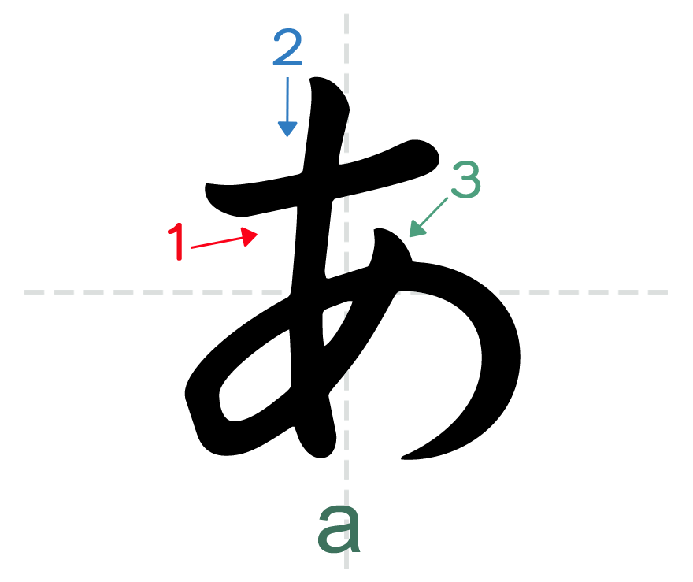

<ion-header>
  <ion-toolbar>
    <ion-buttons slot="start" [routerLink]="['/learn-writing/list-word']">
      <ion-icon name="arrow-back-outline" style="font-size: 24px;"></ion-icon>
    </ion-buttons>
    <ion-title>ひらがな</ion-title>
  </ion-toolbar>
</ion-header>

<ion-content>
  <div class="wrap-word">
    <div class="box">
      <div class="listen">
        <ion-icon name="volume-high-outline" style="color: #3880ff"></ion-icon>
      </div>
      <div class="life">
        <ion-icon name="heart-circle-outline"></ion-icon>
        <ion-icon name="heart-circle-outline"></ion-icon>
        <ion-icon name="heart-circle-outline"></ion-icon>
      </div>
      <div class="note">
        <ion-icon name="star-outline" style="color: #673ab7"></ion-icon>
      </div>
      <div class="img">
        
      </div>
    </div>
  </div>
  <div class="wrap-write">
    <ion-buttons class="btn-color">
      <button
        ion-button
        icon-only
        style.color="#fff"
        (click)="changeColour('#333', true)"
      >
        <ion-icon style="color: #fff; font-size: 30px" name="square"></ion-icon>
      </button>
      <button
        ion-button
        icon-only
        style.color="#fff"
        (click)="changeColour('#333', false)"
      >
        <ion-icon style="color: #333; font-size: 30px" name="square"></ion-icon>
      </button>
      <button
        ion-button
        icon-only
        style.color="#fff"
        (click)="changeColour('#ff9800', false)"
      >
        <ion-icon
          style="color: #ff9800; font-size: 30px"
          name="square"
        ></ion-icon>
      </button>
    </ion-buttons>
    <div class="box">
      <canvas
        #canvas
        (touchstart)="handleStart($event)"
        (touchmove)="handleMove($event)"
      ></canvas>
    </div>
  </div>
  <ion-fab horizontal="center" vertical="bottom" slot="fixed">
    <ion-fab-button>
      <ion-icon name="checkmark-outline"></ion-icon>
    </ion-fab-button>
  </ion-fab>
</ion-content>
